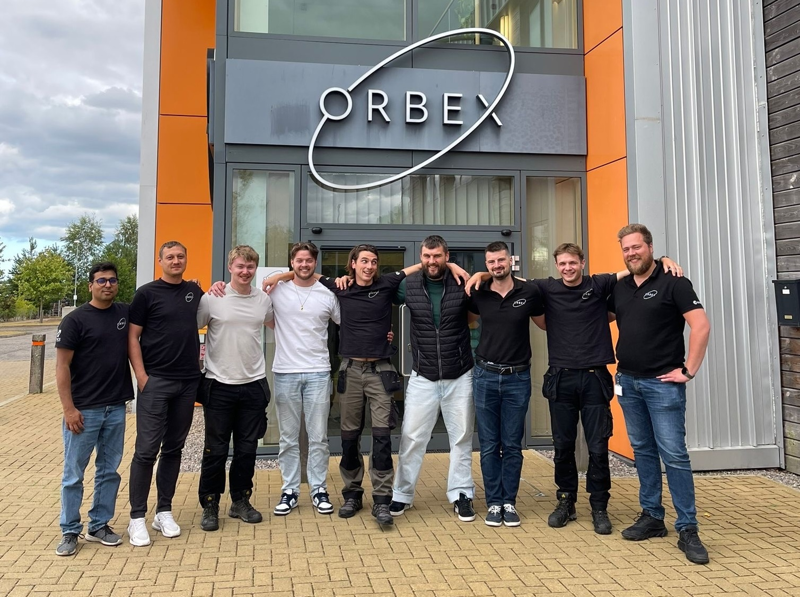
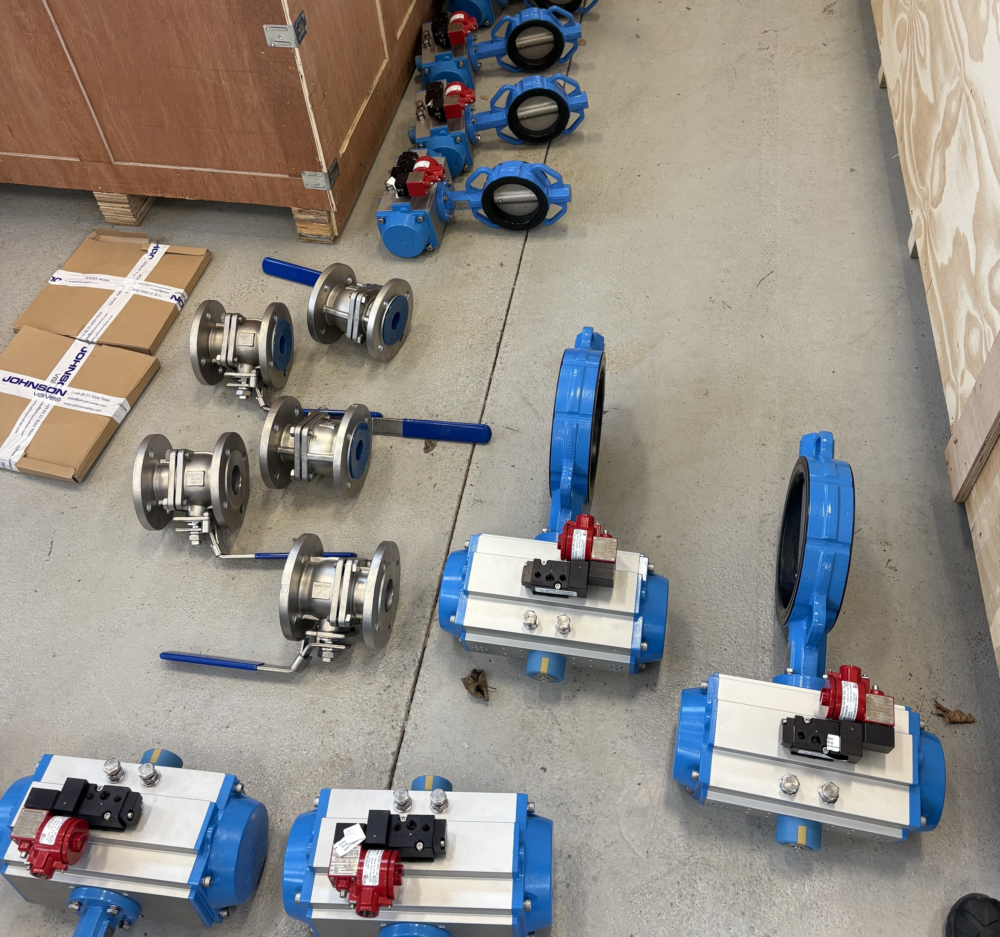
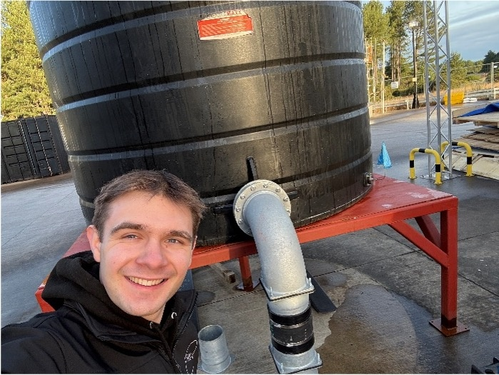
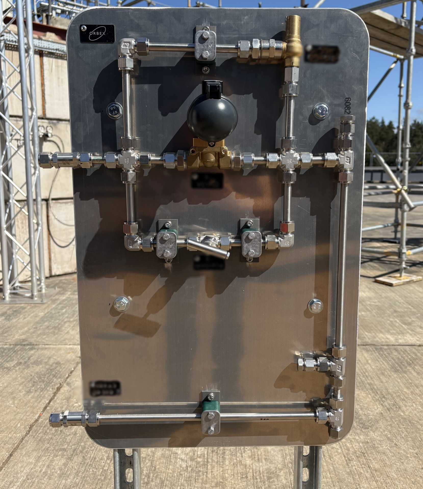
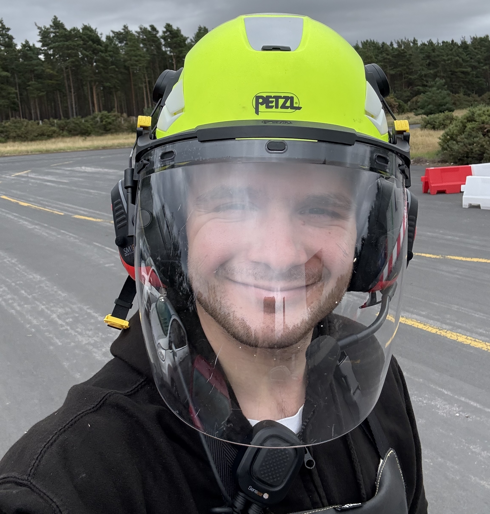
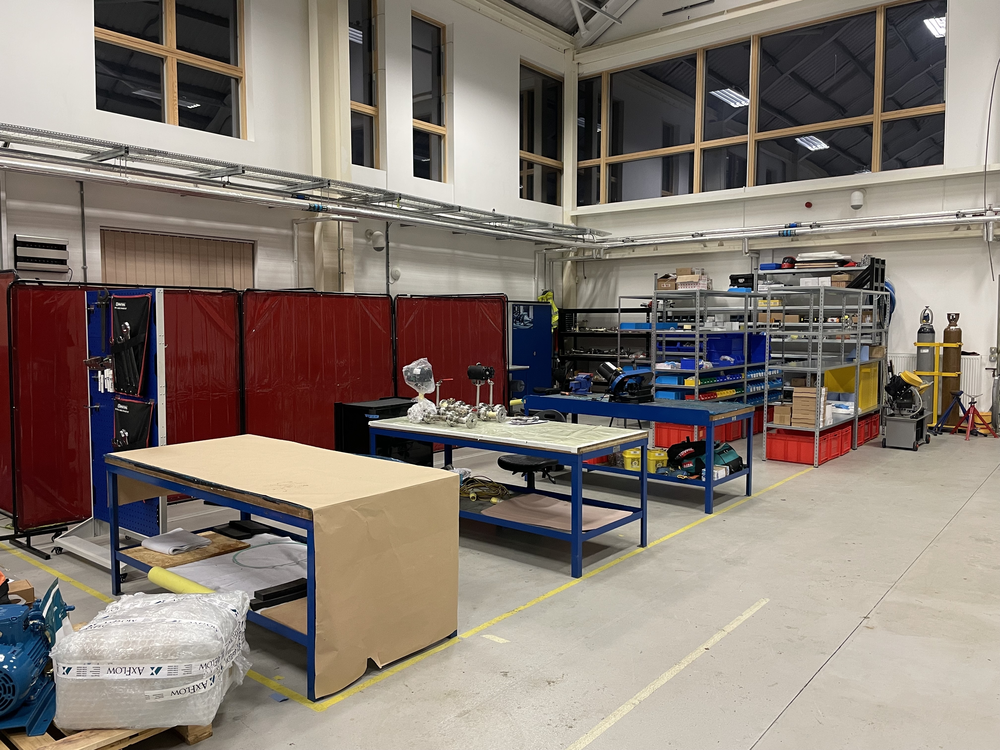
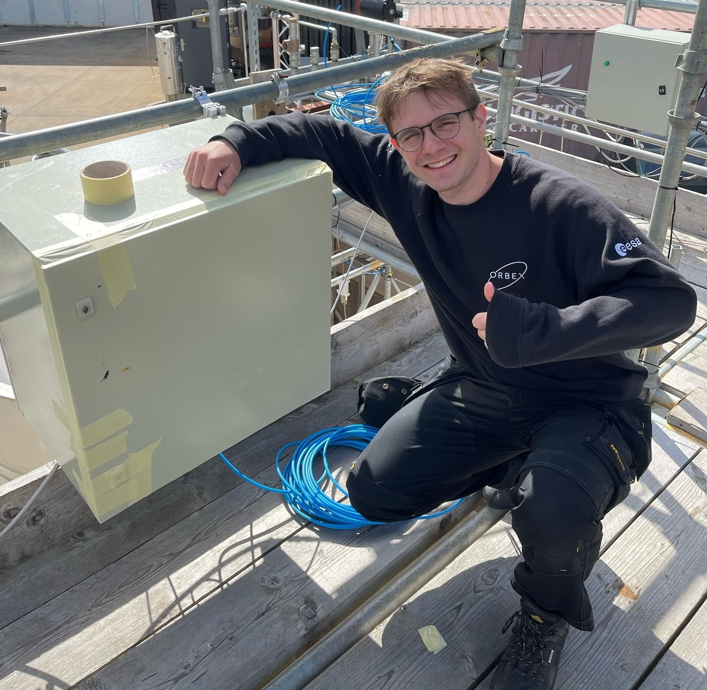
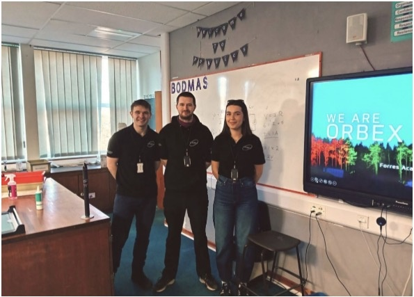

Test Site & Spaceport Fluid Systems
Overview
At Orbex I spent 14 months (extended from an original 10 months) working on spaceport and test site systems — from concept all the way through to installation. I designed and built cryogenic fluid networks (such as a propane cryogenic conditioning and distribution cluster), water deluge systems (both pump-fed and pressure-fed), gas distribution panels and plenty of other projects. The confidentiality of the work means that I will share an overview here, as opposed to detailed breakdowns.

Alongside design work for cryogenic systems at the test site, I managed a full test-site rebuild that included over 400 pipe spools, managing different material suppliers, fabricators and test houses to achieve a tight deadline. I also implemented design changes to improve the site, including standardised spool layouts and a simplified GN2-driving/purge system back-end.
I took full ownership of the deluge system at the test site and spaceport. This included speaking with different teams to understand requirements and compatibility, planning for the physical layout, designing in CAD, producing full drawing packs, managing the full supply chain, inspecting delivered goods, and installation.

Taking delivery of deluge valves
For the spaceport, I also developed a verification and validation plan for fluid systems using ECSS standards and did ATEX zoning (for the test site as well!).
I also built platforms to increase the fluid head at the pump inlet and increase usable volume in the tanks.

I built custom gas panels for different fluid clusters.

I also worked in flight hardware testing programs including helium leak testing and cryogenic qualification.

Cryo kitted up
As well as my main design projects, I also did other jobs as and when they were required. I enjoy helping out where it is needed to keep projects, and company goals, moving.

Hydro-testing pipe networks

Reorganising the workshop multiple times to accommodate other teams' need for space

Removing a wasp nest on site with GN2

Building water rockets with a local school